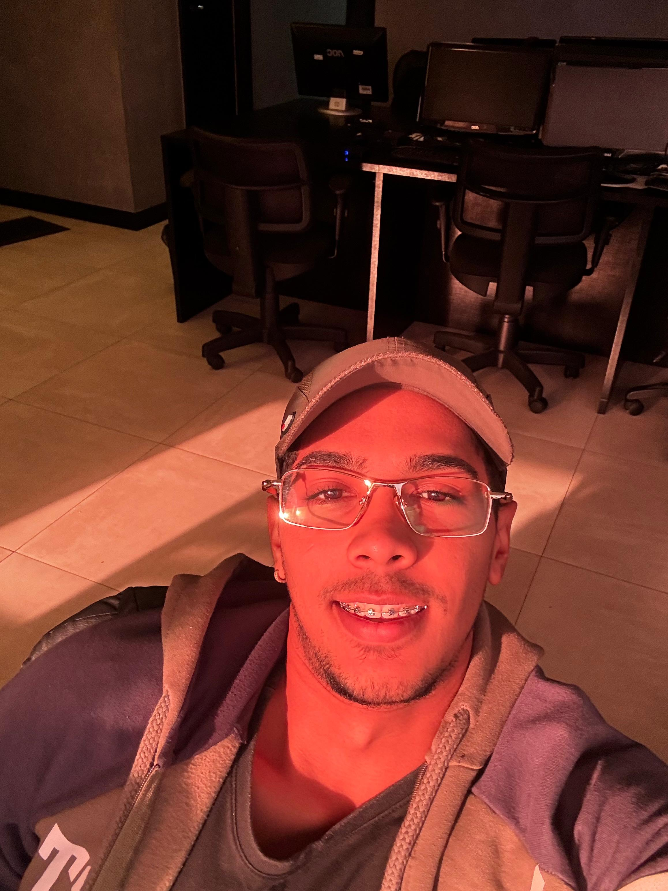

<!DOCTYPE html>
<html lang="pt-BR">

<head>
  <meta charset="UTF-8">
  <meta name="viewport" content="width=device-width, initial-scale=1.0">

  <title>Filipe Rodrigues | Portfolio</title>
  <link rel="stylesheet" href="style.css">

  <link href="https://fonts.googleapis.com/css2?family=Poppins:wght@300;400;500;600&display=swap" rel="stylesheet">
</head>

<body>

  <div class="container">
    <aside class="sidebar">
      

      <h2>Filipe Rodrigues</h2>
      <p class="subtitle">Software Engineering Student | Software Development Intern | Python | JavaScript | SQL |
        Relational Databases | Remote
      </p>

      <div class="info">

        <p><strong>Email</strong></p>
        <a href="mailto:f.rodrigues0907@gmail.com">
          f.rodrigues0907@gmail.com
        </a>

        <p><strong>Location</strong></p>
        <span>Salvador, Bahia - Brazil</span>

        <p><strong>University</strong></p>
        <span>Catholic University of Salvador</span>

        <p><strong>Current Job</strong></p>
        <span>In9 Media - Systems Analyst</span>

        <p><strong>Language</strong></p>
        <span>Portuguese - Native</span>
        <span>English - Basic (Intermediate in progress)</span>

        <div class="btn-download">
          <a href="assets/updated_cv_filipe_Rodrigues.pdf" download>Download CV</a>
        </div>

        <div class="btn-download">
          <a href="https://github.com/lipesoft" class="btn-git">My GitHub</a>
        </div>

        <div class="btn-download">
          <a href="https://www.linkedin.com/in/filipe-rodrigues-a79809386" class="btn-git">My LinkedIn</a>

        </div>
    </aside>

    <main class="content">
      <nav class="menu">
        <a href="#about">About</a>
        <a href="#skills">Skills</a>
        <a href="#projects">Projects</a>
        <a href="#certifications">Certifications</a>
      </nav>

      <section id="about" class="section reveal">
        <h1>About me</h1>
        <p>
          I'm a Software Engineering student and Software Development Intern with hands-on experience building
          real-world applications.
        </p>
        <p>
          I have a strong foundation in Python, JavaScript, and relational databases, and I enjoy developing solutions
          that solve real problems.
        </p>
        <p>
          Currently, I'm focused on becoming a full-stack developer and working on scalable and impactful projects.
        </p>
        <p>
          I'm actively seeking remote opportunities to grow as a developer and contribute to impactful projects.
        </p>
      </section>

      <section id="skills" class="section reveal">
        <h2>Skills</h2>

        <h4>Frontend:</h4>
        <div class="skills-grid">
          <div class="skill">HTML</div>
          <div class="skill">CSS</div>
          <div class="skill">JavaScript</div>
        </div>

        <h4>Backend:</h4>
        <div class="skills-grid">
          <div class="skill">Python</div>
          <div class="skill">SQL</div>
          <div class="skill">SQLite</div>
        </div>

        <h4>Tools:</h4>
        <div class="skills-grid">
          <div class="skill">Git</div>
          <div class="skill">Power BI</div>
          <div class="skill">Figma</div>
        </div>
      </section>

      <section id="projects" class="section reveal">

        <h2>Projects</h2>
        <div class="projects-grid">
          <div class="project-card">
            <div class="project-info">

              <h3>Habit Tracking System</h3>
              <p>
                Built a habit tracking backend using Python and SQLite, supporting user management, habit creation, and
                daily progress tracking.
              </p>
              <p>
                Features include relational data modeling, CRUD operations, and persistence.
              </p>
              <a href="https://github.com/lipesoft/Habit-tracking-system">View Project</a>
            </div>
          </div>

          <div class="project-card">
            <div class="project-info">

              <h3>Banking System</h3>
              <p>
                Banking application built with Python and Object-Oriented Programming.
              </p>
              <a href="https://github.com/lipesoft/sistema-bancario-poo">View Project</a>
            </div>
          </div>

          <div class="project-card">
            <div class="project-info">

              <h3>B3 Financial Analysis</h3>
              <p>
                Interactive dashboard for analyzing financial data from companies listed on the Brazilian Stock
                Exchange.
              </p>
              <a href="https://github.com/lipesoft/b3-financial-analysis">View Project</a>
            </div>
          </div>
      </section>

      <section id="current" class="section reveal">
        <h2>Currently Working On</h2>

        <div class="project-card">
          <div class="project-info">
            <h3>DreamMind</h3>
            <p>
              A mobile application focused on habit building and personal development using gamification and
              personalized
              routines.
            </p>
            <p>
              Includes features like habit tracking, progress analytics, reward systems, and future integration with
              specialists.
            </p><br>
            <p><strong>Focus:</strong> Product Design, Frontend Architecture, UX</p>
            <p><strong>Tech:</strong> Figma, Mobile-first design</p>
          </div>
        </div>
      </section>

      <section id="certifications" class="section reveal">

        <h2>Certifications</h2>

        <ul class="cert-list">
          <li><strong>Python Programming</strong> — Fundação Bradesco</li>
          <li><strong>Data Modeling</strong> — Fundação Bradesco</li>
          <li><strong>Power BI Data Analysis</strong> — Fundação Bradesco</li>
          <li><strong>Relational Databases</strong> — Udemy</li>
          <li><strong>Python with Pandas</strong> — Unifel</li>
          <li><strong>JavaScript Course</strong> — Unifel</li>
          <li><strong>IT Fundamentals</strong> — Fundação Bradesco</li>
        </ul>
      </section>

      <footer>
        <p>
          &copy; 2026 Filipe Rodrigues
          <span class="highlight">::</span> All rights reserved
          <span class="highlight">::</span> Status: Online
        </p>
      </footer>
    </main>
  </div>

  <script src="script.js"></script>

</body>

</html>
